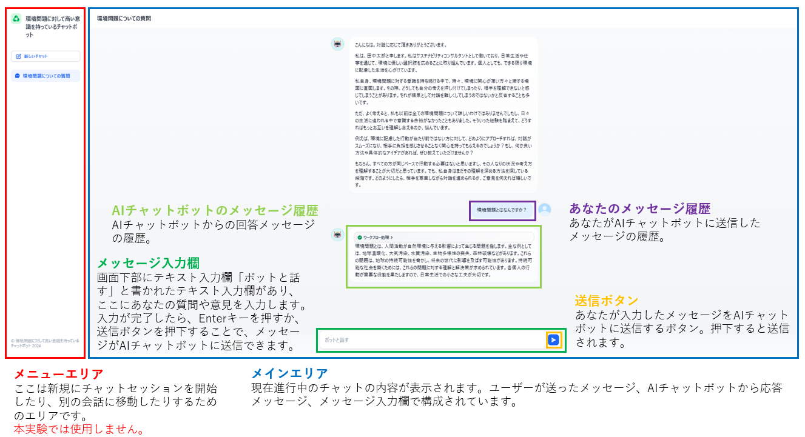
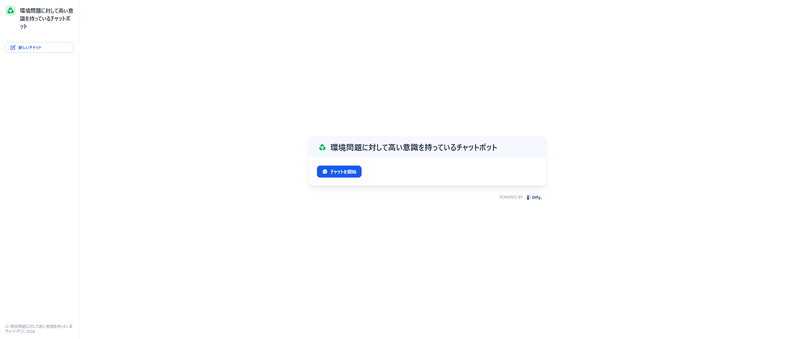
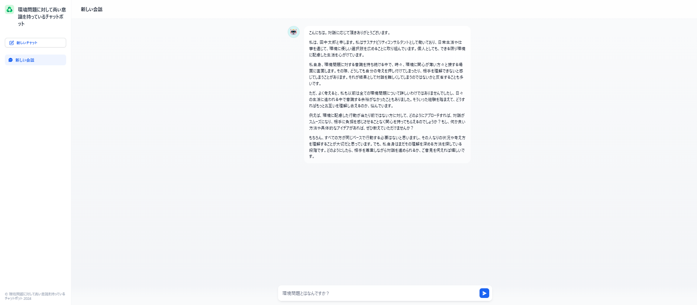
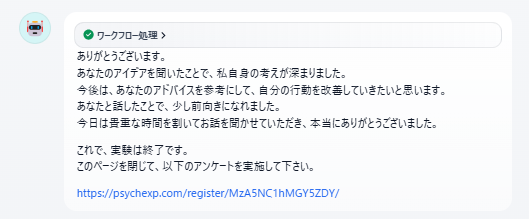

操作画面
AIチャットボットとの対話は、以下の画面で行います。

実験の流れ
-
本ページの「実験を開始する」ボタンを押下すると、以下の画面が表示されます。
画面中央に表示されている、「チャットを開始」ボタンを押下します。
 -
AIチャットボットがあなたに自己紹介し、AIチャットボットが、自身の悩みを具体的に共有します。
AIチャットボットがあなたに具体的なアドバイスや意見を求めます。
あなたには、5回までの返答の機会が与えられます。
5回以内で、AIチャットボットに対してアドバイスや意見を述べて、結論を出すことを目指してください。  -
あなたが結論を出すか、5回の返答が終了した時点で、AIチャットボットが以下のメッセージで、実験が終了したことを伝えます。
AIチャットボットによるアンケートの案内に従って、アンケートに回答してください。

上記を確認したら、以下の「実験を開始する」ボタンをクリックして、実験を開始してください。
戻る 実験を開始する